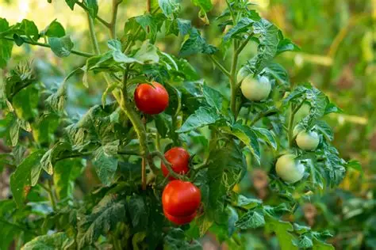
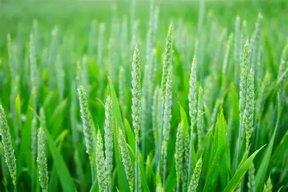

Detect crop disease
Crop Disease Detection helps farmers identify plant diseases at an early stage. Using image processing and machine learning, crop health is analyzed accurately. Early detection reduces crop loss and improves agricultural productivity. This system supports farmers in making timely and effective treatment decisions.
This system helps farmers find crop diseases quickly and easily. It uses images and machine learning to check plant health. Early detection protects crops from serious damage. Farmers can take the right action at the right time.


